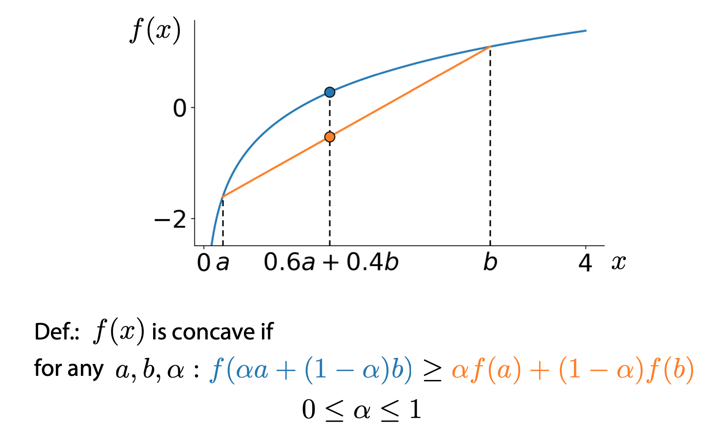
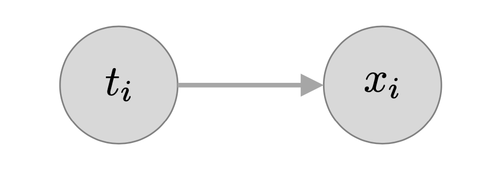

Gaussian Mixture Models(高斯混合模型)
高斯模型即正态分布，高斯混合模型就是几个正态分布的叠加，每一个正态分布代表一个类别，所以和K-means很像，高斯混合模型也可以用来做无监督的聚类分析。
Math
Jensen’s inequality
For any concave function, we have

Then, we have:
Kullback–Leibler divergence
Training
Introducing latent variable

General form of Expectation Maximization
基本步骤
概率角度
- 初始化$\theta^{old}$
- E step: 用 $\theta^{old}$计算样本对应隐变量的概率分布，即求后验概率：$p(Z|X,\theta^{old})$。然后计算完全数据的对数似然对后验概率的期望，它是变量$\theta$的函数:
- M step: 极大化Q函数,得到$\theta^{new}$
- 若不收敛、持续迭代。
程序角度
- 猜测有几个类别，既有几个高斯分布;
- 针对每一个高斯分布，随机给其均值和方差进行赋值;
- 针对每一个样本，计算其在各个高斯分布下的概率;
- 针对每一个高斯分布，每一个样本对该高斯分布的贡献可以由其下的概率表示，如概率大则表示贡献大，反之亦然。这样把样本对该高斯分布的贡献作为权重来计算加权的均值和方差。之后替代其原本的均值和方差;
- 重复3~4直到每一个高斯分布的均值和方差收敛;
- 当高斯混合模型的特征值维数大于一维时，在计算加权的时候还要计算协方差，即要考虑不同维度之间的相互关联.
即通过模型来计算数据的期望值。通过更新参数μ和σ来让期望值最大化。这个过程可以不断迭代直到两次迭代中生成的参数变化非常小为止。该过程和k-means的算法训练过程很相似（k-means不断更新类中心来让结果最大化），只不过在这里的高斯模型中，我们需要同时更新两个参数：分布的均值和标准差。
GMM VS KMeans
KMeans 将样本分到离其最近的聚类中心所在的簇，也就是每个样本数据属于某簇的概率非零即1。对比KMeans，高斯混合的不同之处在于，样本点属于某簇的概率不是非零即1的，而是属于不同簇有不同的概率值。高斯混合模型假设所有样本点是由K个高斯分布混合而成的。
Implementing the EM(Expectation Maximization) algorithm for Gaussian mixture models
Log likelihood
We provide a function to calculate log likelihood for mixture of Gaussians. The log likelihood quantifies the probability of observing a given set of data under a particular setting of the parameters in our model. We will use this to assess convergence of our EM algorithm; specifically, we will keep looping through EM update steps until the log likehood ceases to increase at a certain rate.
1 | def log_sum_exp(Z): |
E-step: assign cluster responsibilities, given current parameters
The first step in the EM algorithm is to compute cluster responsibilities. Let $r_{ik}$ denote the responsibility of cluster $k$ for data point $i$. Note that cluster responsibilities are fractional parts: Cluster responsibilities for a single data point $i$ should sum to 1.
To figure how much a cluster is responsible for a given data point, we compute the likelihood of the data point under the particular cluster assignment, multiplied by the weight of the cluster. For data point $i$ and cluster $k$, this quantity is
where $N(x_i | \mu_k, \Sigma_k)$ is the Gaussian distribution for cluster $k$ (with mean $\mu_k$ and covariance $\Sigma_k$).
We used $\propto$ because the quantity $N(x_i | \mu_k, \Sigma_k)$ is not yet the responsibility we want. To ensure that all responsibilities over each data point add up to 1, we add the normalization constant in the denominator:
Complete the following function that computes $r_{ik}$ for all data points $i$ and clusters $k$.
1 | def compute_responsibilities(data, weights, means, covariances): |
M-step: Update parameters, given current cluster responsibilities
Once the cluster responsibilities are computed, we update the parameters (weights, means, and covariances) associated with the clusters.
Computing soft counts. Before updating the parameters, we first compute what is known as “soft counts”. The soft count of a cluster is the sum of all cluster responsibilities for that cluster:
where we loop over data points. Note that, unlike k-means, we must loop over every single data point in the dataset. This is because all clusters are represented in all data points, to a varying degree.
We provide the function for computing the soft counts:
1 | def compute_soft_counts(resp): |
Updating weights. The cluster weights show us how much each cluster is represented over all data points. The weight of cluster $k$ is given by the ratio of the soft count $N^{\text{soft}}_{k}$ to the total number of data points $N$:
Notice that $N$ is equal to the sum over the soft counts $N^{\text{soft}}_{k}$ of all clusters.
Complete the following function:
1 | def compute_weights(counts): |
Updating means. The mean of each cluster is set to the weighted average of all data points, weighted by the cluster responsibilities:
Complete the following function:
1 | def compute_means(data, resp, counts): |
Updating covariances. The covariance of each cluster is set to the weighted average of all outer products, weighted by the cluster responsibilities:
The “outer product” in this context refers to the matrix product
Letting $(x_i - \hat{\mu}_k)$ to be $d \times 1$ column vector, this product is a $d \times d$ matrix. Taking the weighted average of all outer products gives us the covariance matrix, which is also $d \times d$.
Complete the following function:
1 | def compute_covariances(data, resp, counts, means): |
The EM algorithm
1 | # SOLUTION |
Reference from https://zhuanlan.zhihu.com/p/29538307
Reference from https://zhuanlan.zhihu.com/p/31103654
Reference from coursera course Machine Learning Foundation from University of Washington